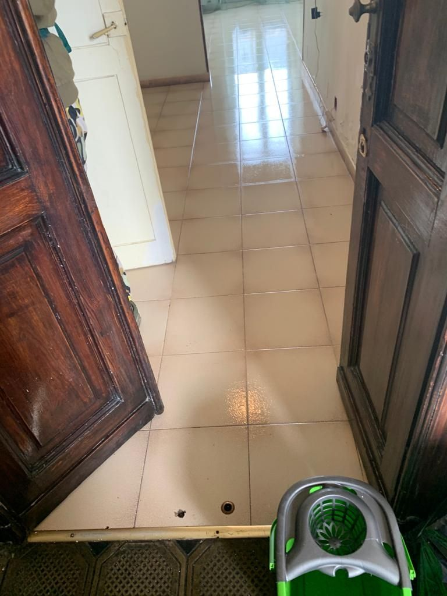
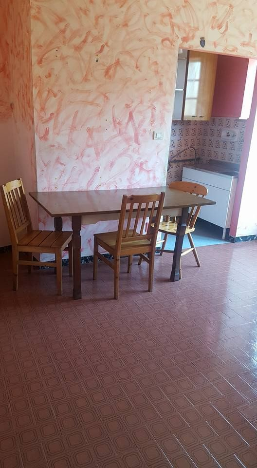
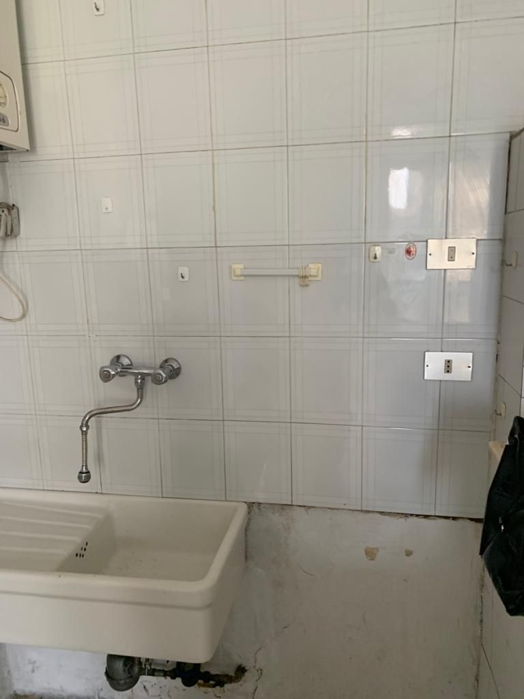
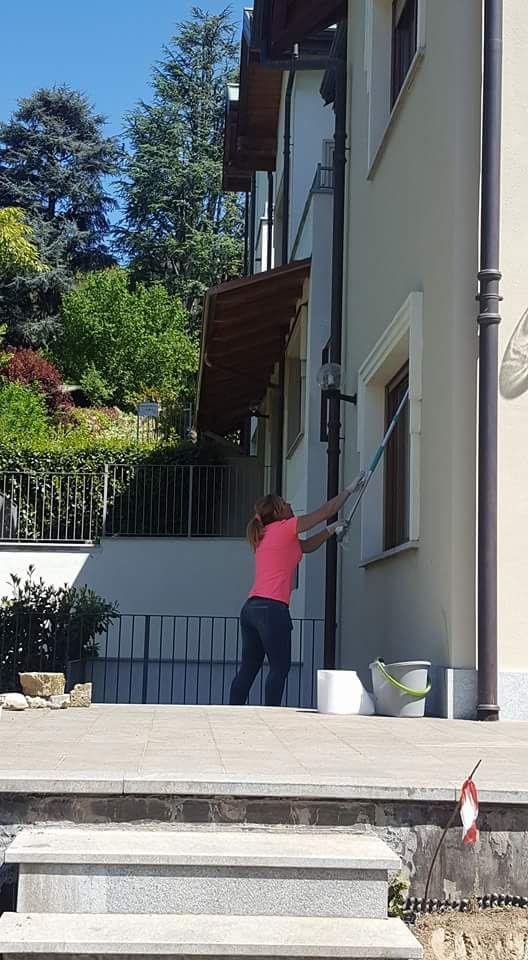
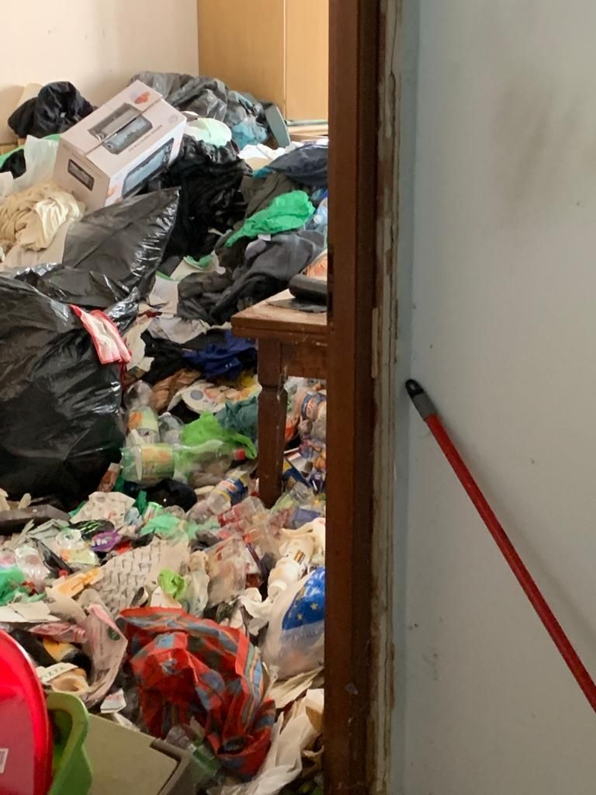
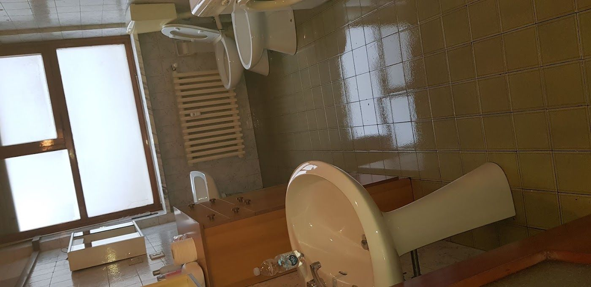
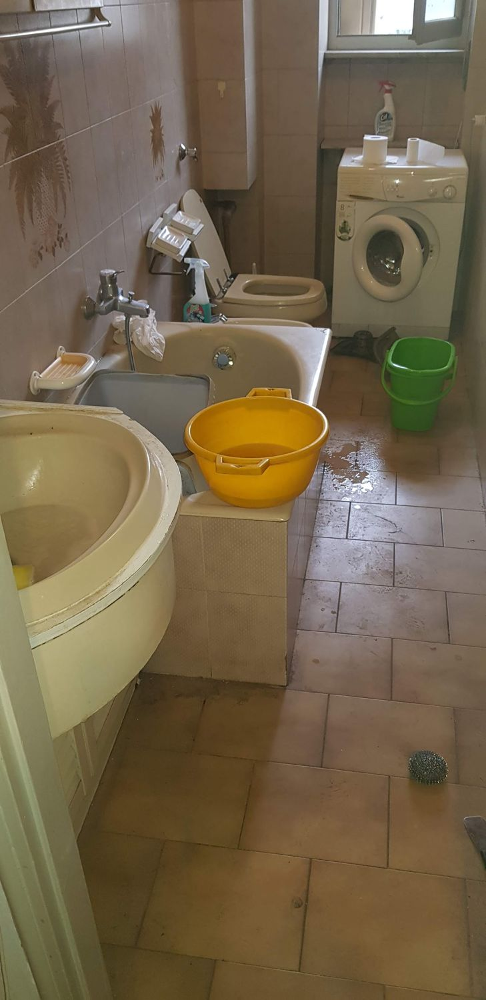

Pulizie di casa, pulizie profonde prima di entrare in un appartamento nuovo e pulizie dopo i lavori. Siamo Claudia e la sua squadra: lavoriamo con calma e attenzione, fughe delle piastrelle comprese.

Dalla pulizia di tutti i giorni a quella più impegnativa, prima o dopo un trasloco o un cantiere.

Pulizie regolari o una tantum, con attenzione ai dettagli.

Sanitari, piastrelle e fughe, pulite con pazienza anche con lo spazzolino.

Vetri, infissi e davanzali, anche dall’esterno.
Alcune case come le abbiamo trovate, prima di metterci al lavoro.



Dicci che pulizia ti serve e quanto è grande la casa: si apre WhatsApp con il messaggio già pronto e ti rispondiamo con un preventivo.
«Sono molto soddisfatto del lavoro svolto. La signora è stata molto precisa e scrupolosa: ha pulito davvero bene sia il bagno che la cucina, dedicando attenzione anche ai dettagli.»
Salvatore G. · un mese fa su Google
«Necessitavo di pulizia profonda dell'appartamento in cui andrò ad abitare, che è arredato. Il lavoro è stato svolto in maniera impeccabile, consiglio questa impresa per la serietà e la scrupolosità, oltre alla gentilezza e disponibilità.»
GIUSEPPINA GISOLDI · 4 mesi fa su Google
«Roxana e Claudia sono prima di tutto due belle persone e poi molto professionali e svolgono il loro lavoro con competenza, accuratezza e organizzazione. Sono soddisfatta del loro operato e mi rivolgerò ancora a loro in futuro. Mi sento pertanto di consigliare questa impresa di pulizie!!!!»
Tiziana Todesco · 3 mesi fa su Google
Chiamaci o scrivici su WhatsApp: ti diamo un preventivo e fissiamo il giorno.
331 464 2660| Lunedì – sabato | 8:00 – 19:40 |
| Domenica | chiuso |
| Zona | Torino e provincia |
Corso Carlo e Nello Rosselli 115/3, 10129 Torino